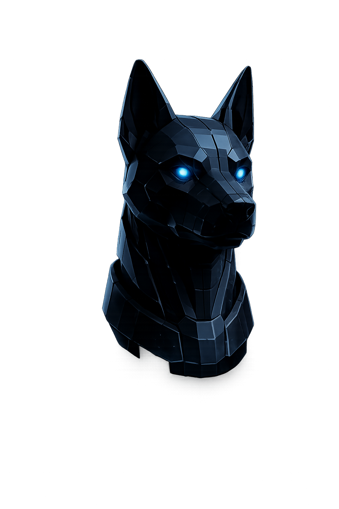

RED TEAM
À venirÉvaluer votre sécurité.
Comprendre vos points faibles.
- Évaluations encadrées
- Revue des constats
- Preuves et rapports
Deux constats de démonstration attendent une revue.

Observer. Comprendre. Agir.
Gardez une vue claire sur vos missions et vos preuves.
Une mission de démonstration.
Deux constats en attente de revue.
Deux preuves locales associées.
Évaluer votre sécurité.
Comprendre vos points faibles.
Relier les informations.
Donner du contexte aux données.
Observer les signaux.
Préparer une réponse éclairée.